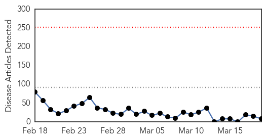
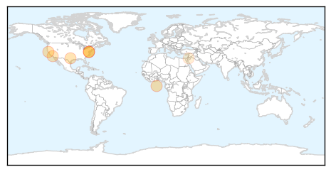
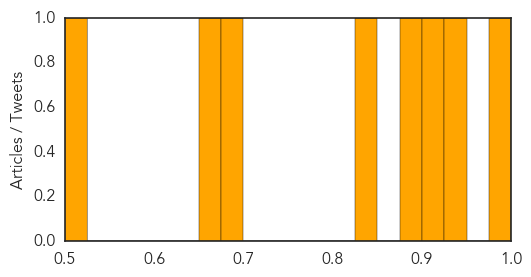
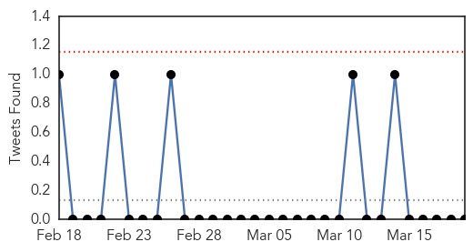
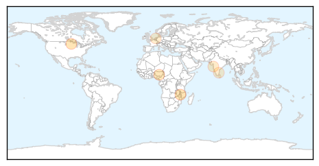
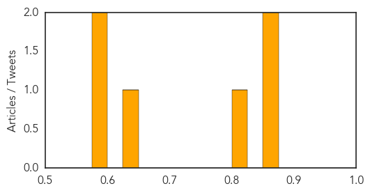

Measles
30-Day Web Trend
0 alerts, 0 warnings

30-Day Twitter Trend
0 alerts, 0 warnings

Article Locations
Article Confidences
Top Articles:
- 0.982
- MGH specialist says immunizations provide community protection
- 0.939
- Vaccine policies effective, still growing
- 0.911
- Parents: Vaccinate your children now
- 0.884
- Pediatrician helps Latino parents understand importance of vaccines
- 0.841
- Aliso Niguel High School
- 0.682
- Catholic experts weigh in on vaccine debate
- 0.671
- Clallam measles outbreak could end up costing hundreds of thousands of dollars in hours, treatments, vaccinations -- Port Angeles Port Townsend Sequim Forks Jefferson County Clallam County Olympic Pen
- 0.502
- MSF UK
Top Tweets:
-
No tweets found for Mar 19, 2015
Influenza
30-Day Web Trend
0 alerts, 0 warnings

30-Day Twitter Trend
3 alerts, 0 warnings

Article Locations
Article Confidences
Top Articles:
- 0.875
- News Scan for Mar 19, 2015
- 0.862
- Role of wild birds in US H5N2 outbreaks questioned
- 0.804
- Bird flu cases on the increase in Plateau, poultry farmers cry out
- 0.635
- Risk of infections spreading in closed-door trains: Docs
- 0.592
- Universal Hib vaccination to prevent 72,000 kid deaths
- 0.589
- Polysaccharide Conjugate Vaccine against Pneumococcal Pneumonia in Adults — NEJM
Top Tweets:
-
No tweets found for Mar 19, 2015